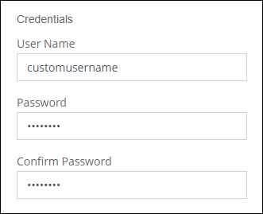
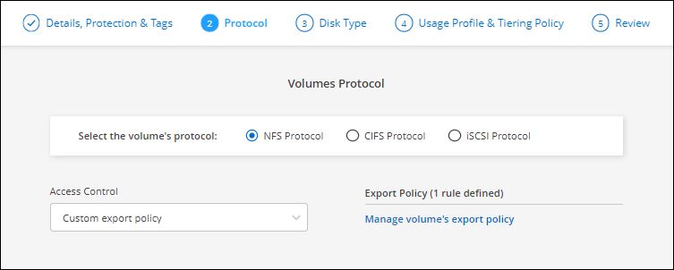
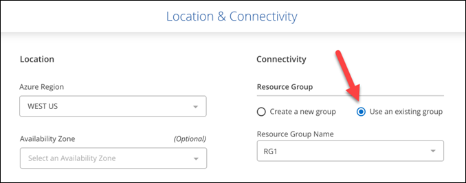

Release notes
Release notes
What’s new
 Suggest changes
Suggest changes
Learn what’s new with Cloud Volumes ONTAP management in BlueXP.
The enhancements described on this page are specific to BlueXP features that enable management of Cloud Volumes ONTAP. To learn what’s new with the Cloud Volumes ONTAP software itself, go to the Cloud Volumes ONTAP Release Notes
10 September 2023
The following changes were introduced with the 3.9.33 release of the Connector.
Support for Lsv3-series VMs in Azure
The L48s_v3 and L64s_v3 instance types are now supported with Cloud Volumes ONTAP in Azure for single node and high-availability pair deployments with shared managed disks in single and multiple availability zones, starting with the 9.13.1 release. These instance types support Flash Cache.
30 July 2023
The following changes were introduced with the 3.9.32 release of the Connector.
Flash Cache and high write speed support in Google Cloud
Flash Cache and high write speed can be enabled separately in Google Cloud for Cloud Volumes ONTAP 9.13.1 and later. High write speed is available on all supported instance types. Flash Cache is supported on the following instance types:
-
n2-standard-16
-
n2-standard-32
-
n2-standard-48
-
n2-standard-64
You can use these features separately or together on both single node and high-availability pair deployments.
Usage reports enhancements
Various improvements to the displayed information within the usage reports are now available. The following are enhancements to the usage reports:
-
The TiB unit is now included in the name of columns.
-
A new "node(s)" field for serial numbers is now included.
-
A new “Workload Type” column is now included under the Storage VMs usage report.
-
Working environment names now included in Storage VMs and Volume usage reports.
-
Volume type “file” is now labeled “Primary (Read/Write)”.
-
Volume type “secondary” is now labeled “Secondary (DP)”.
For more information on usage reports, see Download usage reports.
26 July 2023
The following changes were introduced with the 3.9.31 release of the Connector.
Cloud Volumes ONTAP 9.13.1 GA
BlueXP can now deploy and manage the Cloud Volumes ONTAP 9.13.1 General Availability release in AWS, Azure, and Google Cloud.
2 July 2023
The following changes were introduced with the 3.9.31 release of the Connector.
Support for HA multiple availability zone deployments in Azure
The Japan East and Korea Central in Azure now supports HA multiple availability zone deployments for Cloud Volumes ONTAP 9.12.1 GA and later.
For a list of all regions that support multiple availability zones, see the Global Regions Map under Azure.
Autonomous Ransomware Protection support
Autonomous Ransomware Protection (ARP) is now supported on Cloud Volumes ONTAP. ARP support is available on Cloud Volumes ONTAP version 9.12.1 and higher.
To learn more about ARP with Cloud Volumes ONTAP, see Autonomous Ransomware Protection.
26 June 2023
The following change was introduced with the 3.9.30 release of the Connector.
Cloud Volumes ONTAP 9.13.1 RC1
BlueXP can now deploy and manage Cloud Volumes ONTAP 9.13.1 in AWS, Azure, and Google Cloud.
4 June 2023
The following change was introduced with the 3.9.30 release of the Connector.
Cloud Volumes ONTAP upgrade version selector update
Through the Upgrade Cloud Volumes ONTAP page, you can now choose to upgrade to the latest available version of Cloud Volumes ONTAP or an older version.
To learn more about upgrading Cloud Volumes ONTAP through BlueXP, see Upgrade Cloud Volumes ONTAP.
7 May 2023
The following changes were introduced with the 3.9.29 release of the Connector.
Qatar region now supported in Google Cloud
The Qatar region is now supported in Google Cloud for Cloud Volumes ONTAP and the Connector for Cloud Volumes ONTAP 9.12.1 GA and later.
Sweden Central region now supported in Azure
The Sweden Central region is now supported in Azure for Cloud Volumes ONTAP and the Connector for Cloud Volumes ONTAP 9.12.1 GA and later.
Support for HA multiple availability zone deployments in Azure Australia East
The Australia East region in Azure now supports HA multiple availability zone deployments for Cloud Volumes ONTAP 9.12.1 GA and later.
Charging usage breakdown
Now you can find out what you’re being charged for when you’re subscribed to capacity-based licenses. The following types of usage reports are available for download from the digital wallet in BlueXP. The usage reports provide capacity details of your subscriptions and tell you how you’re being charged for the resources in your Cloud Volumes ONTAP subscriptions. The downloadable reports can be easily shared with others.
-
Cloud Volumes ONTAP package usage
-
High-level usage
-
Storage VMs usage
-
Volumes usage
For more information, see Manage capacity-based licenses.
Notification now displays when accessing BlueXP without a marketplace subscription
A notification now displays whenever you access Cloud Volumes ONTAP in BlueXP without a marketplace subscription. The notification states "a marketplace subscription for this working environment is required to be compliant with Cloud Volumes ONTAP terms and conditions."
4 April 2023
Starting with Cloud Volumes ONTAP 9.12.1 GA, China regions are now supported in AWS as follows.
-
Single node systems are supported.
-
Licenses purchased directly from NetApp are supported.
For regional availability, see Global Regions Maps for Cloud Volumes ONTAP.
3 April 2023
The following changes were introduced with the 3.9.28 release of the Connector.
Turin region now supported in Google Cloud
The Turin region is now supported in Google Cloud for Cloud Volumes ONTAP and the Connector for Cloud Volumes ONTAP 9.12.1 GA and later.
BlueXP digital wallet enhancement
The BlueXP digital wallet now shows the licensed capacity that you purchased with marketplace private offers.
Support for comments during volume creation
This release enables you to make comments when creating an Cloud Volumes ONTAP FlexGroup volume or FlexVol volume when using the API.
BlueXP user interface redesign for Cloud Volumes ONTAP Overview, Volumes, and Aggregates pages
BlueXP now has a redesigned user interface for Cloud Volumes ONTAP Overview, Volumes, and Aggregates pages. The tile-based design presents more comprehensive information in each tile for a better user experience.

FlexGroup Volumes viewable through Cloud Volumes ONTAP
FlexGroup volumes created through CLI or System Manager directly are now viewable through the redesigned Volumes tile in BlueXP. Identical to the information provided for FlexVol volumes, BlueXP provides detailed information for created FlexGroup volumes through a dedicated Volumes tile.

|
Currently, you can only view existing FlexGroup volumes under BlueXP. The ability to create FlexGroup volumes in BlueXP is not available but planned for a future release. |

13 March 2023
China region support
Starting with Cloud Volumes ONTAP 9.12.1 GA, China region support is now supported in Azure as follows.
-
Cloud Volumes ONTAP is supported in China North 3.
-
Single node systems are supported.
-
Licenses purchased directly from NetApp are supported.
For regional availability, see Global Regions Maps for Cloud Volumes ONTAP.
5 March 2023
The following changes were introduced with the 3.9.27 release of the Connector.
Cloud Volumes ONTAP 9.13.0
BlueXP can now deploy and manage Cloud Volumes ONTAP 9.13.0 in AWS, Azure, and Google Cloud.
16 TiB and 32 Tib support in Azure
Cloud Volumes ONTAP now supports 16 TiB and 32 TiB disk sizes for high availability deployments running on managed disks in Azure.
Learn more about supported disk sizes in Azure.
MTEKM license
The Multi-tenant Encryption Key Management (MTEKM) license is now included with new and existing Cloud Volumes ONTAP systems running version 9.12.1 GA or later.
Multi-tenant external key management enables individual storage VMs (SVMs) to maintain their own keys through a KMIP server when using NetApp Volume Encryption.
Support for environments without internet
Cloud Volumes ONTAP is now supported in any cloud environment that has complete isolation from the internet. Only node-based licensing (BYOL) is supported in these environments. Capacity-based licensing is not supported. To get started, manually install the Connector software, log in to the BlueXP console that’s running on the Connector, add your BYOL license to the BlueXP digital wallet, and then deploy Cloud Volumes ONTAP.
Flash Cache and high write speed in Google Cloud
Support for Flash Cache, high write speed, and a high maximum transmission unit (MTU) of 8,896 bytes is now available for select instances with the Cloud Volumes ONTAP 9.13.0 release.
Learn more about supported configurations by license for Google Cloud.
5 February 2023
The following changes were introduced with the 3.9.26 release of the Connector.
Placement group creation in AWS
A new configuration setting is now available for placement group creation with AWS HA single availability zone (AZ) deployments. Now you can choose to bypass failed placement group creations and allow AWS HA single AZ deployments to complete successfully.
For detailed information on how to configure the placement group creation setting, see Configure placement group creation for AWS HA Single AZ.
Private DNS zone configuration update
A new configuration setting is now available so that you can avoid creating a link between a private DNS zone and a virtual network when using Azure Private Links. Creation is enabled by default.
WORM storage and data tiering
You can now enable both data tiering and WORM storage together when you create a Cloud Volumes ONTAP 9.8 system or later. Enabling data tiering with WORM storage allows you to tier the data to an object store in the cloud.
1 January 2023
The following changes were introduced with the 3.9.25 release of the Connector.
Licensing packages available in Google Cloud
Optimized and Edge Cache capacity-based licensing packages are available for Cloud Volumes ONTAP in the Google Cloud Marketplace as a pay-as-you-go offering or as an annual contract.
Default configuration for Cloud Volumes ONTAP
The Multi-tenant Encryption Key Management (MTEKM) license is no longer included in new Cloud Volumes ONTAP deployments.
For more information on the ONTAP feature licenses automatically installed with Cloud Volumes ONTAP, see Default Configuration for Cloud Volumes ONTAP.
15 December 2022
Cloud Volumes ONTAP 9.12.0
BlueXP can now deploy and manage Cloud Volumes ONTAP 9.12.0 in AWS and Google Cloud.
8 December 2022
Cloud Volumes ONTAP 9.12.1
BlueXP can now deploy and manage Cloud Volumes ONTAP 9.12.1, which includes support for new features and additional cloud provider regions.
4 December 2022
The following changes were introduced with the 3.9.24 release of the Connector.
WORM + Cloud Backup now available during Cloud Volumes ONTAP creation
The ability to activate both write once, read many (WORM) and Cloud Backup features is now available during the Cloud Volumes ONTAP creation process.
Israel region now supported in Google Cloud
The Israel region is now supported in Google Cloud for Cloud Volumes ONTAP and the Connector for Cloud Volumes ONTAP 9.11.1 P3 and later.
15 November 2022
The following changes were introduced with the 3.9.23 release of the Connector.
ONTAP S3 license in Google Cloud
An ONTAP S3 license is now included on new and existing Cloud Volumes ONTAP systems running version 9.12.1 or later in Google Cloud Platform.
6 November 2022
The following changes were introduced with the 3.9.23 release of the Connector.
Moving resource groups in Azure
You can now move a working environment from one resource group to a different resource group in Azure within the same Azure subscription.
For more information, see Moving resource groups.
NDMP-copy certification
NDMP-copy is now certified for use with Cloud Volume ONTAP.
For information on how to configure and use NDMP, see NDMP configuration overview.
Managed disk encryption support for Azure
A new Azure permission has been added that now allows you to encrypt all managed disks upon creation.
For more information on this new functionality, see Set up Cloud Volumes ONTAP to use a customer-managed key in Azure.
18 September 2022
The following changes were introduced with the 3.9.22 release of the Connector.
Digital Wallet enhancements
-
The Digital Wallet now shows a summary of the Optimized I/O licensing package and the provisioned WORM capacity for Cloud Volumes ONTAP systems across your account.
These details can help you better understand how you’re being charged and whether you need to purchase additional capacity.
-
You can now change from one charging method to the Optimized charging method.
Optimize cost and performance
You can now optimize the cost and performance of a Cloud Volumes ONTAP system directly from the Canvas.
After you select a working environment, you can choose the Optimize Cost & Performance option to change the instance type for Cloud Volumes ONTAP. Choosing a smaller-sized instance can help you reduce costs, while changing to a larger-sized instance can help you optimize performance.

AutoSupport notifications
BlueXP will now generate a notification if a Cloud Volumes ONTAP system is unable to send AutoSupport messages. The notification includes a link to instructions that you can use to troubleshoot networking issues.
31 July 2022
The following changes were introduced with the 3.9.21 release of the Connector.
MTEKM license
The Multi-tenant Encryption Key Management (MTEKM) license is now included with new and existing Cloud Volumes ONTAP systems running version 9.11.1 or later.
Multi-tenant external key management enables individual storage VMs (SVMs) to maintain their own keys through a KMIP server when using NetApp Volume Encryption.
Proxy server
BlueXP now automatically configures your Cloud Volumes ONTAP systems to use the Connector as a proxy server, if an outbound internet connection isn’t available to send AutoSupport messages.
AutoSupport proactively monitors the health of your system and sends messages to NetApp technical support.
The only requirement is to ensure that the Connector’s security group allows inbound connections over port 3128. You’ll need to open this port after you deploy the Connector.
Change charging method
You can now change the charging method for a Cloud Volumes ONTAP system that uses capacity-based licensing. For example, if you deployed a Cloud Volumes ONTAP system with the Essentials package, you can change it to the Professional package if your business needs changed. This feature is available from the Digital Wallet.
Security group enhancement
When you create a Cloud Volumes ONTAP working environment, the user interface now enables you to choose whether you want the predefined security group to allow traffic within the selected network only (recommended) or all networks.

18 July 2022
New licensing packages in Azure
Two new capacity-based licensing packages are available for Cloud Volumes ONTAP in Azure when you pay through an Azure Marketplace subscription:
-
Optimized: Pay for provisioned capacity and I/O operations separately
-
Edge Cache: Licensing for Cloud Volumes Edge Cache
3 July 2022
The following changes were introduced with the 3.9.20 release of the Connector.
Digital Wallet
The Digital Wallet now shows you the total consumed capacity in your account and the consumed capacity by licensing package. This can help you understand how you’re being charged and whether you need to purchase additional capacity.

Elastic Volumes enhancement
BlueXP now supports the Amazon EBS Elastic Volumes feature when creating a Cloud Volumes ONTAP working environment from the user interface. The Elastic Volumes feature is enabled by default when using gp3 or io1 disks. You can choose the initial capacity based on your storage needs and revise it after Cloud Volumes ONTAP is deployed.
ONTAP S3 license in AWS
An ONTAP S3 license is now included on new and existing Cloud Volumes ONTAP systems running version 9.11.0 or later in AWS.
New Azure Cloud region support
Starting with the 9.10.1 release, Cloud Volumes ONTAP is now supported in the Azure West US 3 region.
ONTAP S3 license in Azure
An ONTAP S3 license is now included on new and existing Cloud Volumes ONTAP systems running version 9.9.1 or later in Azure.
7 June 2022
The following changes were introduced with the 3.9.19 release of the Connector.
Cloud Volumes ONTAP 9.11.1
BlueXP can now deploy and manage Cloud Volumes ONTAP 9.11.1, which includes support for new features and additional cloud provider regions.
New Advanced View
If you need to perform advanced management of Cloud Volumes ONTAP, you can do so using ONTAP System Manager, which is a management interface that’s provided with an ONTAP system. We have included the System Manager interface directly inside BlueXP so that you don’t need to leave BlueXP for advanced management.
This Advanced View is available as a Preview with Cloud Volumes ONTAP 9.10.0 and later. We plan to refine this experience and add enhancements in upcoming releases. Please send us feedback by using the in-product chat.
Support for Amazon EBS Elastic Volumes
Support for the Amazon EBS Elastic Volumes feature with a Cloud Volumes ONTAP aggregate provides better performance and additional capacity, while enabling BlueXP to automatically increase the underlying disk capacity as needed.
Support for Elastic Volumes is available starting with new Cloud Volumes ONTAP 9.11.0 systems and with gp3 and io1 EBS disk types.
Note that support for Elastic Volumes requires new AWS permissions for the Connector:
"ec2:DescribeVolumesModifications",
"ec2:ModifyVolume",Be sure to provide these permissions to each set of AWS credentials that you’ve added to BlueXP. View the latest Connector policy for AWS.
Support for deploying HA pairs in shared AWS subnets
Cloud Volumes ONTAP 9.11.1 includes support for AWS VPC sharing. This release of the Connector enables you to deploy an HA pair in an AWS shared subnet when using the API.
Limited network access when using service endpoints
BlueXP now limits network access when using a VNet service endpoint for connections between Cloud Volumes ONTAP and storage accounts. BlueXP uses a service endpoint if you disable Azure Private Link connections.
Support for creating storage VMs in Google Cloud
Multiple storage VMs are now supported with Cloud Volumes ONTAP in Google Cloud, starting with the 9.11.1 release. Starting with this release of the Connector, BlueXP enables you to create storage VMs on Cloud Volumes ONTAP HA pairs in Google Cloud by using the API.
Support for creating storage VMs requires new Google Cloud permissions for the Connector:
- compute.instanceGroups.get
- compute.addresses.getNote that you must use the ONTAP CLI or System Manager to create a storage VM on a single node system.
2 May 2022
The following changes were introduced with the 3.9.18 release of the Connector.
Cloud Volumes ONTAP 9.11.0
BlueXP can now deploy and manage Cloud Volumes ONTAP 9.11.0.
Enhancement to mediator upgrades
When BlueXP upgrades the mediator for an HA pair, it now validates that a new mediator image is available before it deletes the boot disk. This change ensures that the mediator can continue to operate successfully if the upgrade process is unsuccessful.
K8s tab has been removed
The K8s tab was deprecated in a previous and has now been removed. If you want to use Kubernetes with Cloud Volumes ONTAP, you can add managed-Kubernetes clusters to the Canvas as a working environment for advanced data management.
Annual contract in Azure
The Essentials and Professional packages are now available in Azure through an annual contract. You can contact your NetApp sales representative to purchase an annual contract. The contract is available as a private offer in the Azure Marketplace.
After NetApp shares the private offer with you, you can select the annual plan when you subscribe from the Azure Marketplace during working environment creation.
S3 Glacier Instant Retrieval
You can now store tiered data in the Amazon S3 Glacier Instant Retrieval storage class.
New AWS permissions required for the Connector
The following permissions are now required to create an AWS spread placement group when deploying an HA pair in a single Availability Zone (AZ):
"ec2:DescribePlacementGroups",
"iam:GetRolePolicy",These permissions are now required to optimize how BlueXP creates the placement group.
Be sure to provide these permissions to each set of AWS credentials that you’ve added to BlueXP. View the latest Connector policy for AWS.
New Google Cloud region support
Cloud Volumes ONTAP is now supported in the following Google Cloud regions starting with the 9.10.1 release:
-
Delhi (asia-south2)
-
Melbourne (australia-southeast2)
-
Milan (europe-west8) - single node only
-
Santiago (southamerica-west1) - single node only
Support for n2-standard-16 in Google Cloud
The n2-standard-16 machine type is now supported with Cloud Volumes ONTAP in Google Cloud, starting with the 9.10.1 release.
Enhancements to Google Cloud firewall policies
-
When you create a Cloud Volumes ONTAP HA pair in Google Cloud, BlueXP will now display all existing firewall policies in a VPC.
Previously, BlueXP wouldn’t display any policies in VPC-1, VPC-2, or VPC-3 that didn’t have a target tag.
-
When you create a Cloud Volumes ONTAP single node system in Google Cloud, you can now choose whether you want the predefined firewall policy to allow traffic within the selected VPC only (recommended) or all VPCs.
Enhancement to Google Cloud service accounts
When you select the Google Cloud service account to use with Cloud Volumes ONTAP, BlueXP now displays the email address that’s associated with each service account. Viewing the email address can make it easier to distinguish between service accounts that share the same name.

3 April 2022
System Manager link has been removed
We have removed the System Manager link that was previously available from within a Cloud Volumes ONTAP working environment.
You can still connect to System Manager by entering the cluster management IP address in a web browser that has a connection to the Cloud Volumes ONTAP system. Learn more about connecting to System Manager.
Charging for WORM storage
Now that the introductory special rate has expired, you will now be charged for using WORM storage. Charging is hourly, according to the total provisioned capacity of WORM volumes. This applies to new and existing Cloud Volumes ONTAP systems.
27 February 2022
The following changes were introduced with the 3.9.16 release of the Connector.
Redesigned volume wizard
The create new volume wizard that we recently introduced is now available when creating a volume on a specific aggregate from the Advanced allocation option.
9 February 2022
Marketplace updates
-
The Essentials package and Professional package are now available in all cloud provider marketplaces.
These by-capacity charging methods enable you to pay by the hour or to purchase an annual contract directly from your cloud provider. You still have the option to purchase a by-capacity license directly from NetApp.
If you have an existing subscription in a cloud marketplace, you’re automatically subscribed to these new offerings as well. You can choose by-capacity charging when you deploy a new Cloud Volumes ONTAP working environment.
If you’re a new customer, BlueXP will prompt you to subscribe when you create a new working environment.
-
By-node licensing from all cloud provider marketplaces is deprecated and no longer available for new subscribers. This includes annual contracts and hourly subscriptions (Explore, Standard, and Premium).
This charging method is still available for existing customers who have an active subscription.
6 February 2022
Exchange unassigned licenses
If you have an unassigned node-based license for Cloud Volumes ONTAP that you haven’t used, you can now exchange the license by converting it to a Cloud Backup license, Cloud Data Sense license, or Cloud Tiering license.
This action revokes the Cloud Volumes ONTAP license and creates a dollar-equivalent license for the service with the same expiry date.
30 January 2022
The following changes were introduced with the 3.9.15 release of the Connector.
Redesigned licensing selection
We redesigned the licensing selection screen when creating a new Cloud Volumes ONTAP working environment. The changes highlight the by-capacity charging methods that were introduced in July 2021 and support upcoming offerings through the cloud provider marketplaces.
Digital Wallet update
We updated the Digital Wallet by consolidating Cloud Volumes ONTAP licenses in a single tab.
2 January 2022
The following changes were introduced with the 3.9.14 release of the Connector.
Support for additional Azure VM types
Cloud Volumes ONTAP is now supported with the following VM types in Microsoft Azure, starting with the 9.10.1 release:
-
E4ds_v4
-
E8ds_v4
-
E32ds_v4
-
E48ds_v4
Go to the Cloud Volumes ONTAP Release Notes for more details about supported configurations.
FlexClone charging update
If you use a capacity-based license for Cloud Volumes ONTAP, you are no longer charged for the capacity used by FlexClone volumes.
Charging method now displayed
BlueXP now shows the charging method for each Cloud Volumes ONTAP working environment in the right panel of the Canvas.

Choose your user name
When you create a Cloud Volumes ONTAP working environment, you now have the option to enter your preferred user name, instead of the default admin user name.

Volume creation enhancements
We made a few enhancements to volume creation:
-
We redesigned the create volume wizard for ease of use.
-
Tags that you add to a volume are now associated with the Application Templates service, which can help you organize and simplify the management of your resources.
-
You can now choose a custom export policy for NFS.

28 November 2021
The following changes were introduced with the 3.9.13 release of the Connector.
Cloud Volumes ONTAP 9.10.1
BlueXP can now deploy and manage Cloud Volumes ONTAP 9.10.1.
NetApp Keystone Subscriptions
You can now use Keystone Subscriptions to pay for Cloud Volumes ONTAP HA pairs.
A Keystone Subscription is a pay-as-you-grow subscription-based service that delivers a seamless hybrid cloud experience for those preferring OpEx consumption models to upfront CapEx or leasing.
A Keystone Subscription is supported with all new versions of Cloud Volumes ONTAP that you can deploy from BlueXP.
New AWS region support
Cloud Volumes ONTAP is now supported in the AWS Asia Pacific (Osaka) region (ap-northeast-3).
Port reduction
Ports 8023 and 49000 are no longer open on Cloud Volumes ONTAP systems in Azure for both single node systems and HA pairs.
This change applies to new Cloud Volumes ONTAP systems starting with the 3.9.13 release of the Connector.
4 October 2021
The following changes were introduced with the 3.9.11 release of the Connector.
Cloud Volumes ONTAP 9.10.0
BlueXP can now deploy and manage Cloud Volumes ONTAP 9.10.0.
Reduced deployment time
We reduced the amount of time that it takes to deploy a Cloud Volumes ONTAP working environment in Microsoft Azure or in Google Cloud when normal write speed is enabled. The deployment time is now 3-4 minutes shorter on average.
2 September 2021
The following changes were introduced with the 3.9.10 release of the Connector.
Customer-managed encryption key in Azure
Data is automatically encrypted on Cloud Volumes ONTAP in Azure using Azure Storage Service Encryption with a Microsoft-managed key. But you can now use your own customer-managed encryption key instead by completing the following steps:
-
From Azure, create a key vault and then generate a key in that vault.
-
From BlueXP, use the API to create a Cloud Volumes ONTAP working environment that uses the key.
7 July 2021
The following changes were introduced with the 3.9.8 release of the Connector.
New charging methods
New charging methods are available for Cloud Volumes ONTAP.
-
Capacity-based BYOL: A capacity-based license enables you to pay for Cloud Volumes ONTAP per TiB of capacity. The license is associated with your NetApp account and enables you to create as multiple Cloud Volumes ONTAP systems, as long as enough capacity is available through your license. Capacity-based licensing is available in the form of a package, either Essentials or Professional.
-
Freemium offering: Freemium enables you to use all Cloud Volumes ONTAP features free of charge from NetApp (cloud provider charges still apply). You’re limited to 500 GiB of provisioned capacity per system and there’s no support contract. You can have up to 10 Freemium systems.
Here’s an example of the charging methods that you can choose from:

WORM storage available for general use
Write once, read many (WORM) storage is no longer in Preview and is now available for general use with Cloud Volumes ONTAP. Learn more about WORM storage.
Support for m5dn.24xlarge in AWS
Starting with the 9.9.1 release, Cloud Volumes ONTAP now supports the m5dn.24xlarge instance type with the following charging methods: PAYGO Premium, bring your own license (BYOL), and Freemium.
Select existing Azure resource groups
When creating a Cloud Volumes ONTAP system in Azure, you now have the option to select an existing resource group for the VM and its associated resources.

The following permissions enable BlueXP to remove Cloud Volumes ONTAP resources from a resource group, in case of deployment failure or deletion:
"Microsoft.Network/privateEndpoints/delete",
"Microsoft.Compute/availabilitySets/delete",Be sure to provide these permissions to each set of Azure credentials that you’ve added to BlueXP. View the latest Connector policy for Azure.
Blob public access now disabled in Azure
As a security enhancement, BlueXP now disables Blob public access when creating a storage account for Cloud Volumes ONTAP.
Azure Private Link enhancement
By default, BlueXP now enables an Azure Private Link connection on the boot diagnostics storage account for new Cloud Volumes ONTAP systems.
This means all storage accounts for Cloud Volumes ONTAP will now use a private link.
Balanced persistent disks in Google Cloud
Starting with the 9.9.1 release, Cloud Volumes ONTAP now supports Balanced persistent disks (pd-balanced).
These SSDs balance performance and cost by providing lower IOPS per GiB.
custom-4-16384 no longer supported in Google Cloud
The custom-4-16384 machine type is no longer supported with new Cloud Volumes ONTAP systems.
If you have an existing system running on this machine type, you can keep using it, but we recommend switching to the n2-standard-4 machine type.
30 May 2021
The following changes were introduced with the 3.9.7 release of the Connector.
New Professional Package in AWS
A new Professional Package enables you to bundle Cloud Volumes ONTAP and Cloud Backup Service by using an annual contract from the AWS Marketplace. Payment is per TiB. This subscription doesn’t enable you to back up on-prem data.
If you choose this payment option, you can provision up to 2 PiB per Cloud Volumes ONTAP system through EBS disks and tiering to S3 object storage (single node or HA).
Go to the AWS Marketplace page to view pricing details and go to the Cloud Volumes ONTAP Release Notes to learn more about this licensing option.
Tags on EBS volumes in AWS
BlueXP now adds tags to EBS volumes when it creates a new Cloud Volumes ONTAP working environment. The tags were previously created after Cloud Volumes ONTAP was deployed.
This change can help if your organization uses service control policies (SCPs) to manage permissions.
Minimum cooling period for auto tiering policy
If you enabled data tiering on a volume using the auto tiering policy, you can now adjust the minimum cooling period using the API.
Enhancement to custom export policies
When you create a new NFS volume, BlueXP now displays custom export policies in ascending order, making it easier for you to find the export policy that you need.
Deletion of old cloud snapshots
BlueXP now deletes older cloud snapshots of root and boot disks that are created when a Cloud Volumes ONTAP system is deployed and every time its powered down. Only the two most recent snapshots are retained for both the root and boot volumes.
This enhancement helps reduce cloud provider costs by removing snapshots that are no longer needed.
Note that a Connector requires a new permission to delete Azure snapshots. View the latest Connector policy for Azure.
"Microsoft.Compute/snapshots/delete"24 May 2021
Cloud Volumes ONTAP 9.9.1
BlueXP can now deploy and manage Cloud Volumes ONTAP 9.9.1.
11 Apr 2021
The following changes were introduced with the 3.9.5 release of the Connector.
Logical space reporting
BlueXP now enables logical space reporting on the initial storage VM that it creates for Cloud Volumes ONTAP.
When space is reported logically, ONTAP reports the volume space such that all the physical space saved by the storage efficiency features are also reported as used.
Support for gp3 disks in AWS
Cloud Volumes ONTAP now supports General Purpose SSD (gp3) disks, starting with the 9.7 release. gp3 disks are the lowest-cost SSDs that balance cost and performance for a broad range of workloads.
Cold HDD disks no longer supported in AWS
Cloud Volumes ONTAP no longer supports Cold HDD (sc1) disks.
TLS 1.2 for Azure storage accounts
When BlueXP creates storage accounts in Azure for Cloud Volumes ONTAP, the TLS version for the storage account is now version 1.2.
8 Mar 2021
The following changes were introduced with the 3.9.4 release of the Connector.
Cloud Volumes ONTAP 9.9.0
BlueXP can now deploy and manage Cloud Volumes ONTAP 9.9.0.
Support for the AWS C2S environment
You can now deploy Cloud Volumes ONTAP 9.8 in the AWS Commercial Cloud Services (C2S) environment.
AWS encryption with customer-managed CMKs
BlueXP has always enabled you to encrypt Cloud Volumes ONTAP data using the AWS Key Management Service (KMS). Starting with Cloud Volumes ONTAP 9.9.0, data on EBS disks and data tiered to S3 are encrypted if you select a customer-managed CMK. Previously, only EBS data would be encrypted.
Note that you’ll need to provide the Cloud Volumes ONTAP IAM role with access to use the CMK.
Support for Azure DoD
You can now deploy Cloud Volumes ONTAP 9.8 in the Azure Department of Defense (DoD) Impact Level 6 (IL6).
IP address reduction in Google Cloud
We’ve reduced the number of IP addresses that are required for Cloud Volumes ONTAP 9.8 and later in Google Cloud. By default, one less IP address is required (we unified the intercluster LIF with the node management LIF). You also have the option to skip the creation of the SVM management LIF when using the API, which would reduce the need for an additional IP address.
Shared VPC support in Google Cloud
When you deploy a Cloud Volumes ONTAP HA pair in Google Cloud, you can now choose shared VPCs for VPC-1, VPC-2, and VPC-3. Previously, only VPC-0 could be a shared VPC. This change is supported with Cloud Volumes ONTAP 9.8 and later.
4 Jan 2021
The following changes were introduced with the 3.9.2 release of the Connector.
AWS Outposts
A few months ago, we announced that Cloud Volumes ONTAP had achieved the Amazon Web Services (AWS) Outposts Ready designation. Today, we’re pleased to announce that we’ve validated BlueXP and Cloud Volumes ONTAP with AWS Outposts.
If you have an AWS Outpost, you can deploy Cloud Volumes ONTAP in that Outpost by selecting the Outpost VPC in the Working Environment wizard. The experience is the same as any other VPC that resides in AWS. Note that you will need to first deploy a Connector in your AWS Outpost.
There are a few limitations to point out:
-
Only single node Cloud Volumes ONTAP systems are supported at this time
-
The EC2 instances that you can use with Cloud Volumes ONTAP are limited to what’s available in your Outpost
-
Only General Purpose SSDs (gp2) are supported at this time
Ultra SSD VNVRAM in supported Azure regions
Cloud Volumes ONTAP can now use an Ultra SSD as VNVRAM when you use the E32s_v3 VM type with a single node system in any supported Azure region.
VNVRAM provides better write performance.
Choose an Availability Zone in Azure
You can now choose the Availability Zone in which you’d like to deploy a single node Cloud Volumes ONTAP system. If you don’t select an AZ, BlueXP will select one for you.

Larger disks in Google Cloud
Cloud Volumes ONTAP now supports 64 TB disks in GCP.
|
|
The maximum system capacity with disks alone remains at 256 TB due to GCP limits. |
New machine types in Google Cloud
Cloud Volumes ONTAP now supports the following machine types:
-
n2-standard-4 with the Explore license and with BYOL
-
n2-standard-8 with the Standard license and with BYOL
-
n2-standard-32 with the Premium license and with BYOL
3 Nov 2020
The following changes were introduced with the 3.9.0 release of the Connector.
Azure Private Link for Cloud Volumes ONTAP
By default, BlueXP now enables an Azure Private Link connection between Cloud Volumes ONTAP and its associated storage accounts. A Private Link secures connections between endpoints in Azure.